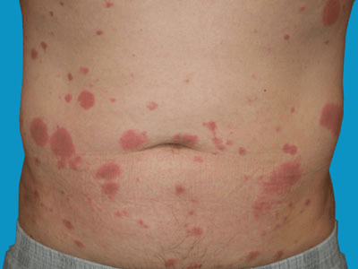

Sweet’s syndrome (also known as acute febrile neutrophilic dermatosis) is an uncommon skin disorder characterised by a fever and the appearance of tender red lumps on the skin. It is a reactive condition with a number of potential triggers. It is not contagious and cannot be transferred from one person to another.

Yes. Treatment is available for Sweet’s syndrome and it can improve quite quickly. Treatments can be divided into topical and oral medication.